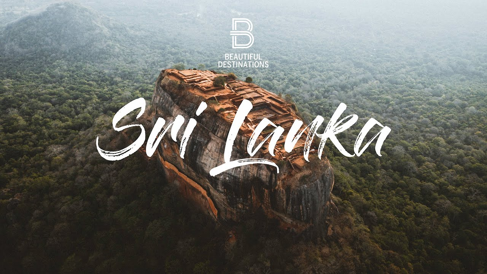

Sri Lanka formerly known as Ceylon, and officially the Democratic Socialist Republic of Sri Lanka, is an island country in
South Asia. It lies in the Indian Ocean, southwest of the Bay of Bengal, and southeast of the Arabian Sea; it is separated from
the Indian subcontinent by the Gulf of Mannar and the Palk Strait. Sri Lanka shares a maritime border with India and the Maldives.
Sri Jayawardenepura Kotte is its legislative capital, and Colombo is its largest city and financial centre.

Sri Lanka's documented history goes back 3,000 years, with evidence of prehistoric human settlements that dates to at least 125,000
years ago. It has a rich cultural heritage. The earliest known Buddhist writings of Sri Lanka, known collectively as the Pāli canon,
date to the fourth Buddhist council, which took place in 29 BCE.Sri Lanka's geographic location and deep harbours have made it of great
strategic importance, from the earliest days of the ancient Silk Road trade route to today's so-called maritime Silk Road.
Because its location made it a major trading hub, it was already known to both Far Easterners and Europeans as long ago as the Anuradhapura
period. The country's trade in luxury goods and spices attracted traders of many nations, which helped to create Sri Lanka's diverse
population.
During a period of great political crisis in the Sinhalese kingdom of Kotte, the Portuguese arrived in Sri Lanka (largely by accident) and
then sought to control the island's maritime regions and its lucrative external trade. Part of Sri Lanka became a Portuguese possession.
After the Sinhalese-Portuguese war, the Dutch and the Kingdom of Kandy took control of those areas.
The Dutch possessions were then taken by the British, who later extended their control over the whole island, colonising it from 1815 to 1948.
A national movement for political independence arose in the early 20th century, and in 1948, Ceylon became a dominion.
The dominion was succeeded by the republic named Sri Lanka in 1972. Sri Lanka's more recent history was marred by a 26-year civil war, w
hich began in 1983 and ended decisively in 2009; when the Sri Lanka Armed Forces defeated the Liberation Tigers of Tamil Eelam.
Today, Sri Lanka is a multinational state, home to diverse cultures, languages, and ethnicities. The Sinhalese are the majority of the
nation's population. The Tamils, who are a large minority group, have also played an influential role in the island's history. Other long e
stablished groups include the Moors, the Burghers, the Malays, the Chinese, and the indigenous Vedda.
The island has had a long history of engagement with modern international groups: it is a founding member of the SAARC and a member
of the United Nations, the Commonwealth of Nations, the G77, and the Non-Aligned Movement.
Sri Lanka is the highest ranked South Asian nation on the Human Development Index, and has the second highest per capita income in S
outh Asia.
In antiquity, Sri Lanka was known to travellers by a variety of names. According to the Mahavamsa, the legendary Prince Vijaya named
the island Tambapanni ('copper-red hands' or 'copper-red earth'), because his followers' hands were reddened by the red soil of the
area where he landed.
According to the Mahāvamsa, a Pāḷi chronicle written in the 5th century CE, the original inhabitants of Sri Lanka are said to be
the Yakshas and Nagas. Ancient cemeteries that were used before 600 BCE and other signs of advanced civilisation have also been
discovered in Sri Lanka.
Sinhalese history traditionally starts in 543 BCE with the arrival of Prince Vijaya, a semi-legendary prince who sailed with 700
followers to Sri Lanka, after being expelled from Vanga Kingdom (present-day Bengal). He established the Kingdom of Tambapanni,
near modern-day Mannar. Vijaya (Singha) is the first of the approximately 189 monarchs of Sri Lanka described in chronicles such
as the Dipavamsa, Mahāvaṃsa, Cūḷavaṃsa, and Rājāvaliya
Once Prakrit speakers had attained dominance on the island, the Mahavamsa further recounts the later migration of royal brides and
service castes from the Tamil Pandya Kingdom to the Anuradhapura Kingdom in the early historic period.
The Avukana Buddha statue, a 12-metre-tall (39 ft) standing Buddha statue from the reign of Dhatusena of Anuradhapura, 5th century
The Anuradhapura period (377 BCE – 1017 CE) began with the establishment of the Anuradhapura Kingdom in 380 BCE during the reign of
Pandukabhaya. Thereafter, Anuradhapura served as the capital city of the country for nearly 1,400 years.
Ancient Sri Lankans excelled at building certain types of structures such as tanks, dagobas and palaces. Society underwent a major
transformation during the reign of Devanampiya Tissa, with the arrival of Buddhism from India. In 250 BCE,Mahinda, a bhikkhu and the
son of the Mauryan Emperor Ashoka arrived in Mihintale carrying the message of Buddhism
 Once Prakrit speakers had attained dominance on the island, the Mahavamsa further recounts the later migration of royal brides and
service castes from the Tamil Pandya Kingdom to the Anuradhapura Kingdom in the early historic period.
The Avukana Buddha statue, a 12-metre-tall (39 ft) standing Buddha statue from the reign of Dhatusena of Anuradhapura, 5th century
The Anuradhapura period (377 BCE – 1017 CE) began with the establishment of the Anuradhapura Kingdom in 380 BCE during the reign of
Pandukabhaya. Thereafter, Anuradhapura served as the capital city of the country for nearly 1,400 years.
Once Prakrit speakers had attained dominance on the island, the Mahavamsa further recounts the later migration of royal brides and
service castes from the Tamil Pandya Kingdom to the Anuradhapura Kingdom in the early historic period.
The Avukana Buddha statue, a 12-metre-tall (39 ft) standing Buddha statue from the reign of Dhatusena of Anuradhapura, 5th century
The Anuradhapura period (377 BCE – 1017 CE) began with the establishment of the Anuradhapura Kingdom in 380 BCE during the reign of
Pandukabhaya. Thereafter, Anuradhapura served as the capital city of the country for nearly 1,400 years.